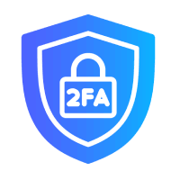
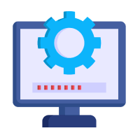
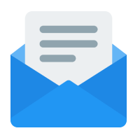
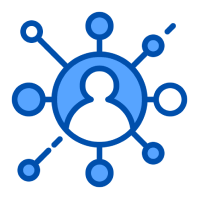
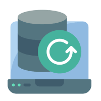
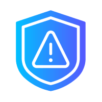

Sichern Sie Ihre digitale Identität: Schützen Sie sich vor Cyberbedrohungen
Ihre digitale Identität ist wertvoll und muss geschützt werden! In einer Zeit, in der Cyberangriffe immer häufiger werden, ist es entscheidend, die richtigen Sicherheitsmaßnahmen zu ergreifen. Hier finden Sie die wichtigsten Schritte, um Ihre Daten zu sichern und sich vor Bedrohungen zu wappnen.
|  |
Zwei-Faktor-AuthentifizierungAktivieren Sie die Zwei-Faktor-Authentifizierung (2FA) überall, wo möglich. Diese Methode erfordert neben dem Passwort eine zweite Identifikation, meist per SMS oder Authenticator-App, und verhindert effektiv unbefugten Zugriff. |
|  |
Software-UpdatesHalten Sie Ihr Betriebssystem, Ihre Anwendungen und Sicherheitssoftware stets aktuell. Updates schließen Sicherheitslücken und bieten Schutz vor den neuesten Bedrohungen. |
|  |
Vorsicht bei E-Mails und DownloadsSeien Sie misstrauisch gegenüber unaufgeforderten E-Mails, insbesondere mit Anhängen oder Links. Überprüfen Sie immer den Absender und öffnen Sie keine verdächtigen Dateien. |
|  |
Sichere NetzwerkeVermeiden Sie öffentliche, ungesicherte WLAN-Netzwerke für sensible Aktivitäten. Nutzen Sie stattdessen ein VPN, um Ihre Verbindung zu verschlüsseln und Ihre Daten zu schützen. |
|  |
Regelmäßige BackupsSichern Sie Ihre wichtigen Daten regelmäßig auf externen Festplatten oder in der Cloud. So sind Ihre Informationen geschützt, falls es zu einem Systemausfall oder Cyberangriff kommt. |
|  |
Bewusstsein und AufmerksamkeitDie wichtigste Schutzmaßnahme ist Ihre eigene Aufmerksamkeit. Bleiben Sie wachsam, informieren Sie sich über aktuelle Bedrohungen und seien Sie vorsichtig bei der Preisgabe persönlicher Informationen online. |